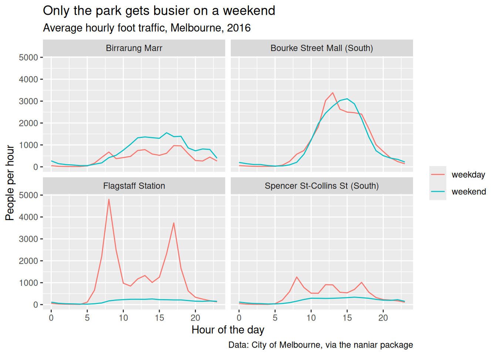
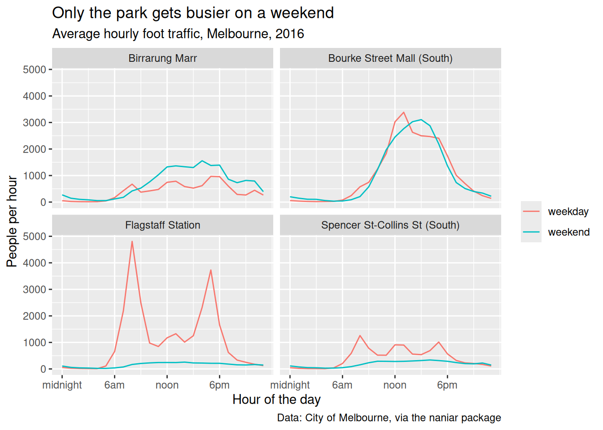
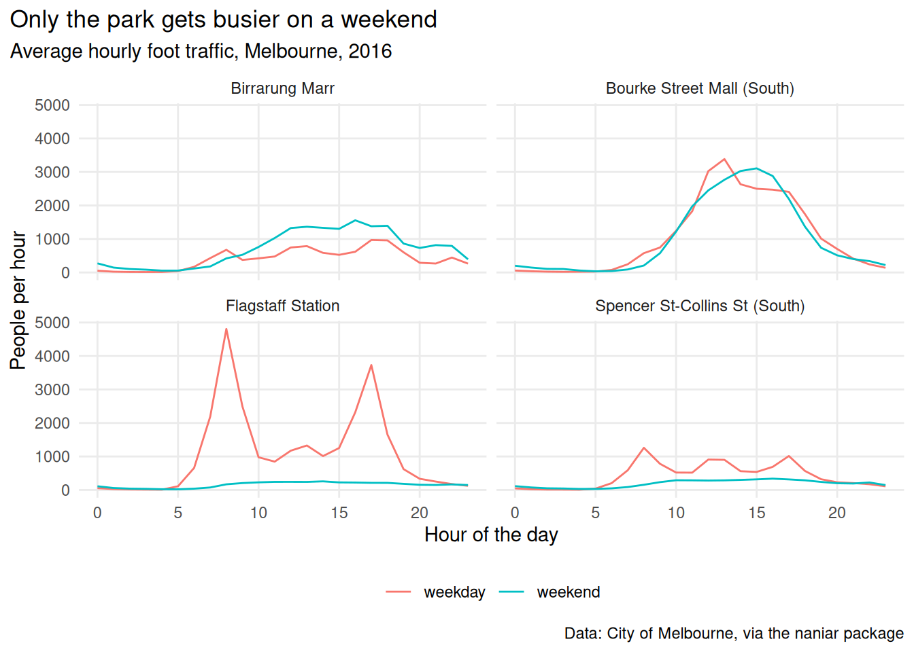
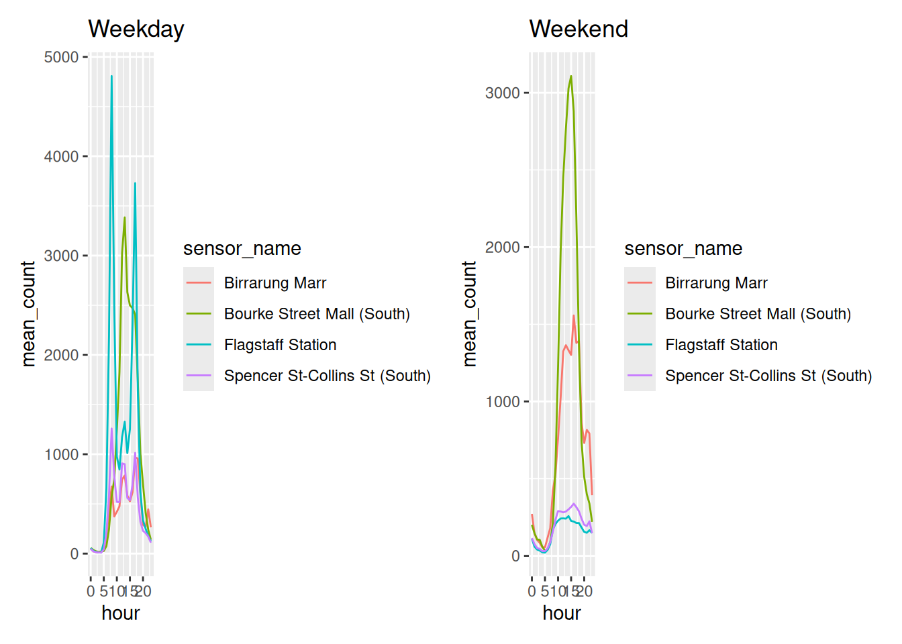
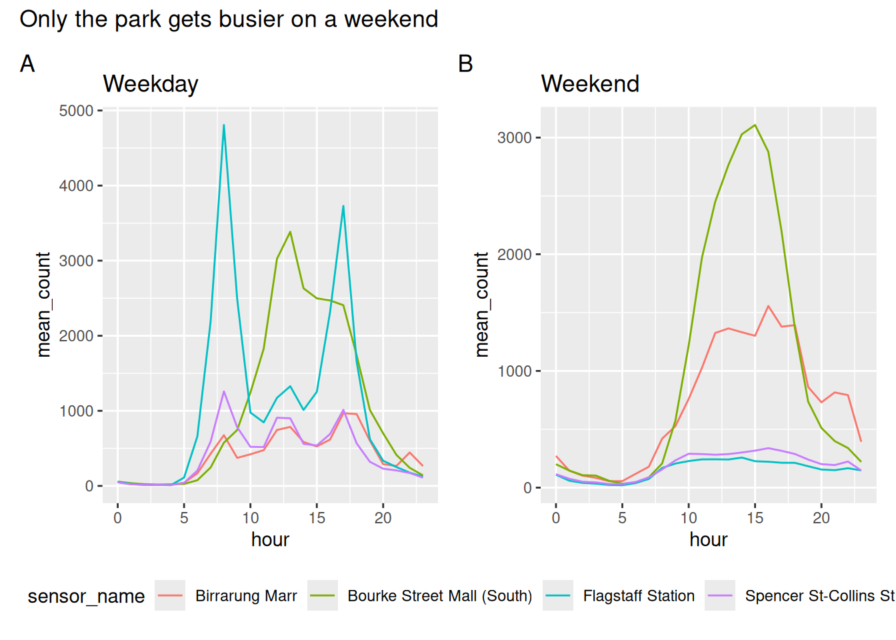

7 Making it land
Your plot is right. Now it has to survive leaving your screen, and end up in a paper, a slide, or a report where nobody’s there to explain it.
This chapter is the last mile: labels, themes, combining plots, and getting a file out that looks the way it did in RStudio.
We finish by turning the course into a checklist you can run on anything.
Overview
Duration 41 minutes
Questions
- When should I start polishing?
- What should the title say?
- How do I make every plot in a report match?
- How do I combine several plots?
- Why does the saved file look different to my screen?
- How do I critique a plot, including my own?
What you need this session
- A session of RStudio open
- The following packages installed
7.1 Polish last
The idea: polishing a plot you’re going to throw away is the most common way to waste an afternoon.
Everything here comes after Chapter 4, Chapter 5 and Chapter 6 have been answered. The order I work in:
labs()- colours with
scale_colour_*() - a theme
- move or remove the legend
ggsave()
Each step is cheaper to redo than the one before it.
Save the plot to an object first. Small habit, and from here everything is p + one thing.

7.2 Say the finding, not the variables
The idea: the title is the loudest thing on the plot. Spend it on what you found, not on what the columns were called.
Default labels are your column names. mean_count is not a sentence.

Compare “Only the park gets busier on a weekend” with “mean_count by hour”. One of those tells you what you’re looking at.
If you can’t write that sentence, that’s worth knowing before you spend an hour on themes.
Axes a human can read
The axis is text too, and the defaults are safe rather than readable.
- Breaks. ggplot2 picks
0 5 10 15 20for hours, because it doesn’t know they’re hours. Nobody thinks in five hour blocks. - Big numbers. Totals print as
2500000. - Labels that collide. Long category names overlap.

For the other two:
check.overlap is the one worth knowing, because it thins labels automatically when the same figure goes into a slide and a paper at different widths.
Alt text
labs(alt = ) sets what a screen reader says.
p_alt <- p_labelled +
labs(alt = "Four line charts of average hourly foot traffic in
Melbourne in 2016. Flagstaff Station and Spencer St have large
weekday commuter peaks that vanish at the weekend. Bourke Street
Mall is the same on both. Birrarung Marr is the only sensor
busier at the weekend.")
get_alt_text(p_alt)[1] "Four line charts of average hourly foot traffic in\n Melbourne in 2016. Flagstaff Station and Spencer St have large\n weekday commuter peaks that vanish at the weekend. Bourke Street\n Mall is the same on both. Birrarung Marr is the only sensor\n busier at the weekend."Say the finding, then the shape, then the axes. Not “a line chart of x against y”, which tells a screen reader user nothing they couldn’t guess.
Every figure in this book has alt text. Look at the source of any of them.
library(tidyverse)
library(naniar)
library(patchwork)
pedestrian_hourly <- pedestrian |>
mutate(day_type = if_else(
condition = str_starts(week_day, "S"),
true = "weekend",
false = "weekday"
)
) |>
group_by(sensor_name, day_type, hour) |>
summarise(
mean_count = mean(hourly_counts, na.rm = TRUE),
.groups = "drop"
)
p <- ggplot(pedestrian_hourly,
aes(x = hour,
y = mean_count,
colour = day_type)) +
geom_line() +
facet_wrap(vars(sensor_name))
p
p_labelled <- p +
labs(
title = "Only the park gets busier on a weekend",
subtitle = "Average hourly foot traffic, Melbourne, 2016",
x = "Hour of the day",
y = "People per hour",
colour = NULL,
caption = "Data: City of Melbourne, via the naniar package"
)
p_labelledWrite a title for a plot of your own that states its finding.
Add alt text and read it back:
- Put comma separators on a y axis running into the millions.
Only open this if you’ve actually had a go.
1. If you can’t write it, the plot probably isn’t finished. That’s the useful outcome, not a failure.
3. scale_y_continuous(labels = scales::label_comma()).
What to hold onto
- The title is the loudest element. Spend it on the finding
- If you can’t state the finding, stop polishing and go back to the plot
- Alt text says the finding first, not the chart type
7.3 Themes, and making one yours
The idea: a theme is every non-data decision in one place. Wrap it in a function and every plot in the report matches.
Then theme() for the details, and wrap the lot in a function:

Change the function once and every figure in the paper changes.
theme_set(theme_pedestrian()) at the top of a document does it for everything without you typing it each time.
ggthemes and hrbrthemes ship dozens of ready made themes, including deliberate imitations of the Economist, FiveThirtyEight and the Wall Street Journal.
They’re fun and worth ten minutes of play. The skill transfers either way, because they’re all just theme() calls somebody else wrote.
One catch: hrbrthemes wants specific fonts installed and complains loudly when they’re missing.
library(tidyverse)
library(naniar)
library(patchwork)
pedestrian_hourly <- pedestrian |>
mutate(day_type = if_else(
condition = str_starts(week_day, "S"),
true = "weekend",
false = "weekday"
)
) |>
group_by(sensor_name, day_type, hour) |>
summarise(
mean_count = mean(hourly_counts, na.rm = TRUE),
.groups = "drop"
)
p <- ggplot(pedestrian_hourly,
aes(x = hour,
y = mean_count,
colour = day_type)) +
geom_line() +
facet_wrap(vars(sensor_name))
p
p_labelled <- p +
labs(
title = "Only the park gets busier on a weekend",
subtitle = "Average hourly foot traffic, Melbourne, 2016",
x = "Hour of the day",
y = "People per hour",
colour = NULL,
caption = "Data: City of Melbourne, via the naniar package"
)
p_labelled- Write your own theme function. Change one thing you always change.
Try
theme_minimal(base_size = 16). Where does the...in your function send that?Run
theme_set(theme_mine()), then draw any plot. What happened?
Only open this if you’ve actually had a go.
2. Straight through to theme_minimal(), which is why the ... is there. Without it your function would silently ignore every argument.
3. Every plot afterwards uses it, with no + theme_mine() needed. Handy for a report, confusing in a script somebody else reads.
What to hold onto
- A theme is every non-data decision in one place
- Wrapping it in a function is what makes a report look like one document
theme_set()when you don’t want to type it at all
7.4 Combining plots
The idea: patchwork combines finished plots with the operators you’d guess.
p_weekday <- pedestrian_hourly |>
filter(day_type == "weekday") |>
ggplot(aes(x = hour, y = mean_count, colour = sensor_name)) +
geom_line() +
labs(title = "Weekday")
p_weekend <- pedestrian_hourly |>
filter(day_type == "weekend") |>
ggplot(aes(x = hour, y = mean_count, colour = sensor_name)) +
geom_line() +
labs(title = "Weekend")
p_weekday + p_weekend
p1 + p2side by sidep1 / p2stacked(p1 + p2) / p3nested
Two legends saying the same thing is the decoration Chapter 5 was about. plot_layout(guides = "collect") fixes it.

tag_levels = "A" labels the panels, which is what a journal will ask for.
library(tidyverse)
library(naniar)
library(patchwork)
pedestrian_hourly <- pedestrian |>
mutate(day_type = if_else(
condition = str_starts(week_day, "S"),
true = "weekend",
false = "weekday"
)
) |>
group_by(sensor_name, day_type, hour) |>
summarise(
mean_count = mean(hourly_counts, na.rm = TRUE),
.groups = "drop"
)
p <- ggplot(pedestrian_hourly,
aes(x = hour,
y = mean_count,
colour = day_type)) +
geom_line() +
facet_wrap(vars(sensor_name))
p
p_weekday <- pedestrian_hourly |>
filter(day_type == "weekday") |>
ggplot(aes(x = hour, y = mean_count, colour = sensor_name)) +
geom_line() +
labs(title = "Weekday")
p_weekend <- pedestrian_hourly |>
filter(day_type == "weekend") |>
ggplot(aes(x = hour, y = mean_count, colour = sensor_name)) +
geom_line() +
labs(title = "Weekend")
p_weekday + p_weekendBuild
(p_weekday + p_weekend) / p. What do the brackets do?Collect the legends and move them to the right instead of the bottom.
Rebuild the four sensor story from Chapter 4 as one figure.
Only open this if you’ve actually had a go.
1. The brackets group the two plots so they share a row, and the third sits underneath across the full width. Without them you get three in a row.
2. Change legend.position to "right" in the & line. The & applies the theme to every plot in the patchwork, rather than just the last one, which is the bit that catches people.
What to hold onto
+for side by side,/for stacked, brackets to groupplot_layout(guides = "collect")for one legend instead of three&applies a theme to the whole patchwork,+only to the last plot
7.5 Getting it out
The idea: the saved file does not look like the RStudio pane, and knowing why saves you an afternoon.
Text does not scale with the plot. Make the canvas bigger and the text stays the same physical size, so it gets proportionally smaller.
Open both. The wide one has tiny text and nothing about the code changed.
Things worth knowing:
ggsave()defaults to the last plot drawn, which bites once you’ve moved on. Passplot =explicitlywidthandheightare inches unless you setunits =dpi = 300for print, and it does nothing for a vector format- the file extension picks the device
- vector (
.pdf,.svg) for line art, raster (.png) for anything with thousands of overplotted points. A hex plot from Chapter 5 is small as a PDF; 35,152 points is not
library(tidyverse)
library(naniar)
library(patchwork)
pedestrian_hourly <- pedestrian |>
mutate(day_type = if_else(
condition = str_starts(week_day, "S"),
true = "weekend",
false = "weekday"
)
) |>
group_by(sensor_name, day_type, hour) |>
summarise(
mean_count = mean(hourly_counts, na.rm = TRUE),
.groups = "drop"
)
p <- ggplot(pedestrian_hourly,
aes(x = hour,
y = mean_count,
colour = day_type)) +
geom_line() +
facet_wrap(vars(sensor_name))
p
p_labelled <- p +
labs(
title = "Only the park gets busier on a weekend",
subtitle = "Average hourly foot traffic, Melbourne, 2016",
x = "Hour of the day",
y = "People per hour",
colour = NULL,
caption = "Data: City of Melbourne, via the naniar package"
)
p_labelledSave the same plot at
width = 4andwidth = 12. Open both. What happened to the text?Save one as
.pngand one as.pdf. Compare the file sizes.You need a figure for a journal: one column wide, 300 dpi. What do you pass?
Only open this if you’ve actually had a go.
3. Something like ggsave("fig1.pdf", plot = p, width = 3.5, height = 3, dpi = 300). One column is usually about 3.5 inches. Check the journal’s guide, they all publish one.
What to hold onto
- Text doesn’t scale with the canvas, so size the canvas to its final home
- Always pass
plot = - Vector for line art, raster for dense point clouds
7.6 Four questions
The chapter titles of this course are a checklist. That was deliberate.
What am I comparing? (Chapter 4) Is the thing I want compared next to the thing I want it compared to?
What’s in the way? (Chapter 5) How much of this is not data, and can I see the data through it?
Where should the eye go? (Chapter 6) What does a reader meet first, and did I choose it?
Does it say its finding? (this chapter) If somebody reads only the title, do they get the point?
And a fifth, quieter one we’ve been doing since Chapter 1:
Did I draw it first?
library(tidyverse)
library(naniar)
library(patchwork)
pedestrian_hourly <- pedestrian |>
mutate(day_type = if_else(
condition = str_starts(week_day, "S"),
true = "weekend",
false = "weekday"
)
) |>
group_by(sensor_name, day_type, hour) |>
summarise(
mean_count = mean(hourly_counts, na.rm = TRUE),
.groups = "drop"
)Run the four questions on a plot you’ve made before this course.
Then run them on a plot from this book. Mine included: there are plenty in here that would not survive all four.
7.7 Open practice and questions
Bring a plot you’re working on, or pick something from the ggplot2 extension gallery you’d like to try.